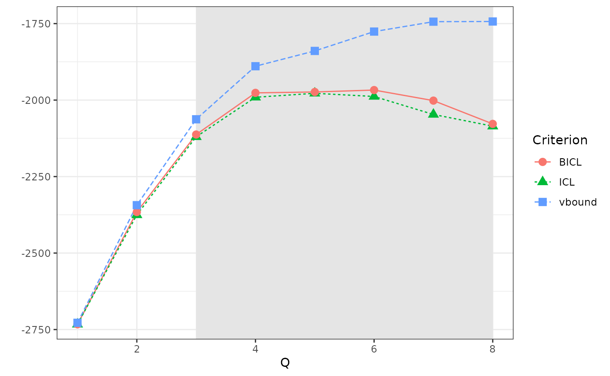
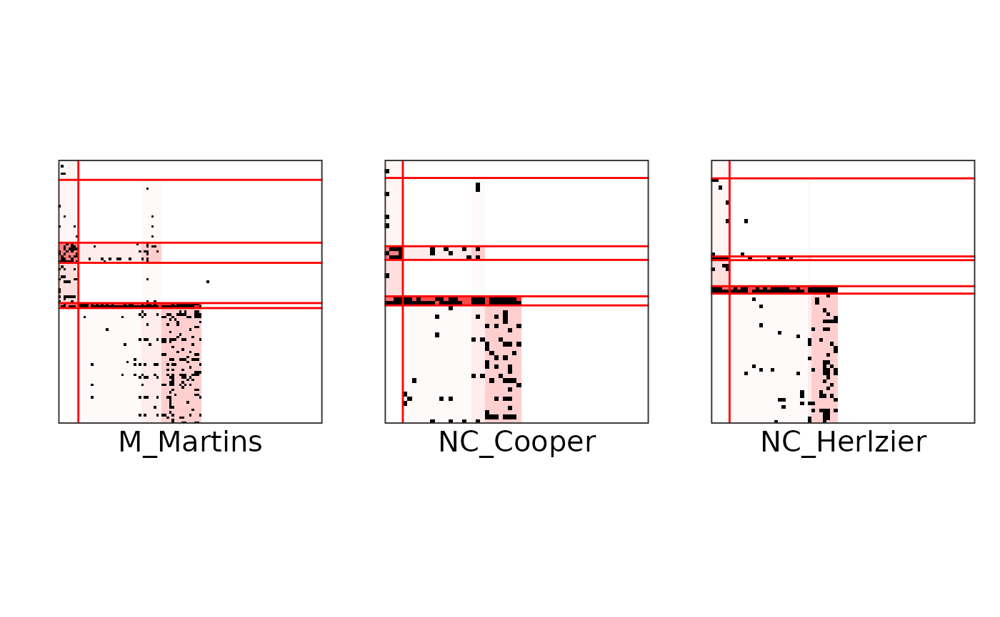
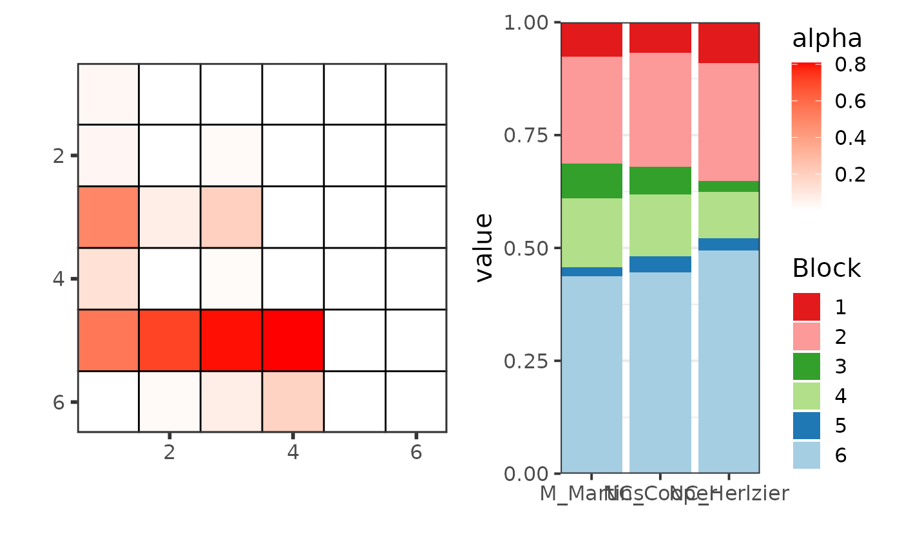
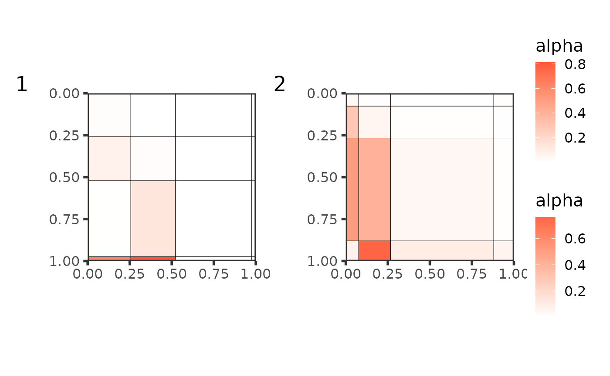

Tutorial on food webs
tutorial.RmdEstimation with colSBM
We load a list of 8 foodwebs. They are binary directed networks with different number of species. First, we are going to model jointly the first networks, using the iid-colSBM model.
# global_opts = list(nb_cores = 1L,
# nb_models = 5L,
# nb_init = 10L,
# depth = 2L,
# verbosity = 1,
# spectral_init = FALSE,
# Q_max = 8L,
# plot_details = 1)
set.seed(1234)
res_fw_iid <- estimate_colSBM(
netlist = foodwebs[1:3], # A list of networks
colsbm_model = "iid", # The name of the model
directed = TRUE, # Foodwebs are directed networks
net_id = names(foodwebs)[1:3], # Name of the networks
nb_run = 1L, # Number of runs of the algorithm
global_opts = list(
verbosity = 0,
plot_details = 0,
Q_max = 8
) # Max number of clusters
)We can look at how the variational bound and the model selection criteria evolve with the number of clusters. Here, the BICL criterion selects Q = 6 blocks.
plot(res_fw_iid)
best_fit <- res_fw_iid$best_fitResults and analysis
Here are some useful fields to analyze the results.
best_fit
#> Fitted Collection of Simple SBM -- bernoulli variant for 3 networks
#> =====================================================================
#> Dimension = ( 105 58 71 ) - ( 6 ) blocks.
#> BICL = -1968.184 -- #Empty blocks : 0
#> =====================================================================
#> * Useful fields
#> $distribution, $nb_nodes, $nb_clusters, $support, $Z
#> $memberships, $parameters, $BICL, $vbound, $pred_dyadsWe can get:
- the estimation of the model parameters
best_fit$parameters
#> $alpha
#> [,1] [,2] [,3] [,4] [,5]
#> [1,] 1.654117e-01 4.104311e-10 3.246466e-09 1.080220e-01 1.076970e-02
#> [2,] 8.226642e-02 7.793893e-11 1.430957e-09 1.471371e-02 1.740869e-01
#> [3,] 8.044809e-01 8.827248e-10 2.916664e-08 7.091898e-01 8.005497e-01
#> [4,] 9.586038e-03 8.982061e-12 1.602695e-10 5.212206e-08 6.086412e-10
#> [5,] 5.163214e-03 7.134406e-04 4.701629e-10 2.548327e-08 1.206080e-09
#> [6,] 9.670336e-07 1.906056e-11 3.546247e-10 1.003176e-08 1.193513e-09
#> [,6]
#> [1,] 0.50005501
#> [2,] 0.00930964
#> [3,] 0.61220429
#> [4,] 0.03959626
#> [5,] 0.12085452
#> [6,] 0.09970615
#>
#> $pi
#> $pi[[1]]
#> [1] 0.04473272 0.46137008 0.02564103 0.23041184 0.15360019 0.08424415
#>
#> $pi[[2]]
#> [1] 0.04473272 0.46137008 0.02564103 0.23041184 0.15360019 0.08424415
#>
#> $pi[[3]]
#> [1] 0.04473272 0.46137008 0.02564103 0.23041184 0.15360019 0.08424415
#>
#>
#> $delta
#> [1] 1 1 1- The block memberships:
best_fit$Z
#> [[1]]
#> Unidentified sp1 FW_009 Terrestrial plant material
#> 3 3
#> Terrestrial invertebrates Achnanthes lanceolata
#> 1 2
#> Batrachospermum Calothrix sp1 FW_009
#> 2 2
#> Cocconeis placentula Cosmarium sp1 FW_009
#> 2 2
#> Cyclotella sp1 FW_009 Cymbella aspera
#> 2 2
#> Cymbella cuspidata Cymbella kappi
#> 2 2
#> Cymbella tumida Diatoma heimale
#> 2 2
#> Epithemia sorex Epithemia turgida
#> 2 2
#> Eunotia serpentina Unidentified sp2 FW_009
#> 2 2
#> Euntoia pectinalis Fragilaria sp1 FW_009
#> 2 2
#> Fragilaria vaucheriae Frustulia rhomboides
#> 2 2
#> Gomphoneis herculeana Gomphonema accuminatum
#> 2 2
#> Gomphonema angustatum Gomphonema truncatum
#> 2 2
#> Unidentified sp3 FW_009 Melosira varians
#> 2 2
#> Navicula avenacea Navicula dicephala
#> 2 2
#> Nitzschia dubia Oedogonium sp1 FW_009
#> 2 2
#> Phormidium sp1 FW_009 Pinnularia mesolepta
#> 2 2
#> Pinnularia viridis Pleaurotaenium sp1 FW_009
#> 2 2
#> Rhoicospenia curvata Rhopalodia sp1 FW_009
#> 2 2
#> Schizothrix sp1 FW_009 Staurastrum sp1 FW_009
#> 2 2
#> Surirella elegans Surirella tenera
#> 2 2
#> Synedra ulna Tabellaria fenestrata
#> 2 2
#> Tabellaria flocculosa Ulothrix sp1 FW_009
#> 2 2
#> Unidentified sp4 FW_009 Unidentified sp5 FW_009
#> 2 2
#> Acroneuria sp1 FW_009 Aelosoma sp1 FW_009
#> 6 1
#> Alloperla sp1 FW_009 Anepeorus sp1 FW_009
#> 2 6
#> Antocha saxicola Baetis
#> 5 5
#> Boyeria vinosa Bryophaenocladius sp1 FW_009
#> 4 5
#> Chauliodes sp1 FW_009 Chimarra atterima
#> 6 1
#> Unidentified sp6 FW_009 Conchapelopia sp1 FW_009
#> 5 6
#> Cryptolabis sp1 FW_009 Cyrnellus sp1 FW_009
#> 4 4
#> Dicrotendipes sp1 FW_009 Diplectrona modesta
#> 5 5
#> Ectopria nervosa Endochironomous sp1 FW_009
#> 5 1
#> Ephemerella sp1 FW_009 Eukieferiella pseudomontana
#> 4 4
#> Eukiefferiella 'dark' type Glossosoma sp1 FW_009
#> 5 4
#> Gyraulus sp1 FW_009 Haploperla brevis
#> 5 4
#> Hexatoma sp1 FW_009 Hydrophilidae
#> 6 4
#> Hydropsyche sp1 FW_009arana Larsia sp1 FW_009
#> 6 4
#> Leucrocuta sp1 FW_009 Leuctra sp1 FW_009
#> 5 5
#> Unidentified sp7 FW_009 Metriocnemus sp1 FW_009
#> 1 5
#> Micrasema sp1 FW_009 Ochthebius sp1 FW_009
#> 4 4
#> Ophiogomphus sp1 FW_009 Paraleptophlebia sp1 FW_009
#> 6 4
#> Paranyctiophylax sp1 FW_009 Polycentropus sp1 FW_009
#> 4 4
#> Probezzia sp1 FW_009 Promoresia sp1 FW_009
#> 4 5
#> Psephenus sp1 FW_009 Pseudolimnolphila sp1 FW_009
#> 5 4
#> Rhyacophila sp1 FW_009 Simulium sp1 FW_009
#> 4 5
#> Sphaerium occidentale Stempelinella sp1 FW_009
#> 4 5
#> Stenelmis crenata Stenelmis sp1 FW_009
#> 5 5
#> Suwalia sp1 FW_009 Tallaperla sp1 FW_009
#> 4 1
#> Tanytarsus Genus A Tricorythodes sp1 FW_009
#> 4 4
#> Notropis heterolepsis Brook trout
#> 6 6
#> Orcnocetes virilis Rhinichthys cataractae
#> 4 6
#> Cambarus bartonii
#> 4
#>
#> [[2]]
#> Unidentified sp1 FW_012_01 Terrestrial invertebrates
#> 3 2
#> Plant material Achnanthes lanceolata
#> 3 2
#> Achnanthes minutissima Audouinella sp1 FW_012_01
#> 2 2
#> Batrachospermum Blue-green algae
#> 2 2
#> Calothrix Cymbella cistula
#> 2 2
#> Cymbella mulleri Diatoma heimale
#> 2 2
#> Epithemia sorex Epithemia turgida
#> 2 2
#> Eunotia pectinalis Eunotia sp1 FW_012_01
#> 2 2
#> Frustulia rhomboides Gomphoneis herculeana
#> 2 2
#> Gomphonema intricatum Gomphonema sp1 FW_012_01
#> 2 2
#> Meridion circulare Navicula avenacea
#> 2 2
#> Pleurotaenium Rhoicosphenia curvata
#> 2 2
#> Stigeoclonium Synedra ulna
#> 2 2
#> Ulothrix Unidentified sp2 FW_012_01
#> 2 2
#> Aelosoma Brachycentrus sp1 FW_012_01
#> 1 5
#> Cambarus bartoni Chauliodes sp1 FW_012_01
#> 6 4
#> Cordulegaster maculata Dicranota sp1 FW_012_01
#> 4 4
#> Ectopria thoracica Epeorus dispar
#> 5 5
#> Glossosoma sp1 FW_012_01 Homoplectra sp1 FW_012_01
#> 4 5
#> Hudsonimya sp1 FW_012_01 Hydropsyche sp1 FW_012_01
#> 4 1
#> Leucrocuta sp1 FW_012_01 Leuctra sp1 FW_012_01
#> 5 4
#> Lumbriculiid oligochaete Parametriocnemus sp1 FW_012_01
#> 1 5
#> Neureclipsis sp1 FW_012_01 Ophiogomphus sp1 FW_012_01
#> 5 4
#> Palpomyia sp1 FW_012_01 Palpomyia sp2 FW_012_01
#> 4 4
#> Promoresia sp1 FW_012_01 Psephenus sp1 FW_012_01
#> 5 5
#> Soliperla sp1 FW_012_01 Stenelmis adult
#> 6 4
#> Stenelmis sp1 FW_012_01 Suwalia sp1 FW_012_01
#> 4 4
#> Tallaperla maria Thaumalea sp1 FW_012_01
#> 4 5
#> Tipula abdominalis Salamander
#> 5 6
#>
#> [[3]]
#> Unidentified sp1 FW_012_02 Terrestrial plants
#> 3 3
#> Terrestrial bugs Achnanthes inflata var. elata
#> 2 2
#> Achnanthes lanceolata Achnanthes linearis
#> 2 2
#> Achnanthes minutissima Auodinella hermanii
#> 2 2
#> Blue Green algae Calothrix
#> 2 2
#> Cocconeis placentula Cymbella kappi
#> 2 2
#> Cymbella mulleri Diatoma heimale
#> 2 2
#> Epithemia turgida Eunotia meisteri
#> 2 2
#> Eunotia pectinalis Fragilaria vaucheriae
#> 2 2
#> Frustulia rhomboides Gomphoneis herculeana
#> 2 2
#> Gomphonema accuminatum Gomphonema angustatum
#> 2 2
#> Gomphonema intricatum Gomphonema tennuellum
#> 2 2
#> Marssoniella Navicula avenacea
#> 2 2
#> Navicula cryptocephala Navicula mutica
#> 2 2
#> Navicula sp1 FW_012_02 Pinnularia viridis
#> 2 2
#> Rhoicosphenia curvata Rhopalodia
#> 2 2
#> Surirella brebbisonii Surirella elegans
#> 2 2
#> Synechoccus Synedra ulna
#> 2 2
#> Ulothrix Unidentified sp2 FW_012_02
#> 2 2
#> Aeolosoma sp1 FW_012_02 Ajax longipes
#> 1 6
#> Amphinemura wui Anchytarsus bicolor
#> 5 4
#> Baetis Hudsonimya
#> 5 4
#> Cricotopus Dicranota
#> 5 4
#> Eukieffidrella pseudomontana Diplectrona modesta
#> 4 4
#> Dixella Dolophilodes
#> 4 6
#> Ectopria thoracica Epeorus dispar
#> 5 5
#> Fatigia pele Hexatoma sp1 FW_012_02
#> 4 6
#> Leuctra Oligo Lumbr. Blue
#> 5 5
#> Oligo. Lumbr. Pink Ophiogomphus
#> 4 4
#> Paraleptophelebia Pericoma
#> 4 4
#> Pilaria Pentaneuri sp1 FW_012_02
#> 4 4
#> Polycentropus maculatus Stenelmis
#> 4 5
#> Tallaperla maria Tanyderid
#> 6 4
#> Conchapelopia Tipula
#> 4 4
#> Wormaldia moesta Crayfish
#> 4 6
#> Salamander
#> 6- The prediction for each dyads in the networks, here for network
number 3. If your goal is dyad prediction, then you should use
colsbm_model = "delta", instead ofcolsbm_model = "iid".
best_fit$pred_dyads[[3]][1:10, 1:5]
#> Unidentified sp1 FW_012_02 Terrestrial plants
#> Unidentified sp1 FW_012_02 0.000000e+00 3.209306e-08
#> Terrestrial plants 3.209306e-08 0.000000e+00
#> Terrestrial bugs 1.712430e-09 1.712430e-09
#> Achnanthes inflata var. elata 1.711335e-09 1.711335e-09
#> Achnanthes lanceolata 1.711334e-09 1.711334e-09
#> Achnanthes linearis 1.711334e-09 1.711334e-09
#> Achnanthes minutissima 1.711334e-09 1.711334e-09
#> Auodinella hermanii 1.711347e-09 1.711347e-09
#> Blue Green algae 1.711334e-09 1.711334e-09
#> Calothrix 1.711338e-09 1.711338e-09
#> Terrestrial bugs Achnanthes inflata var. elata
#> Unidentified sp1 FW_012_02 3.803331e-04 5.032990e-07
#> Terrestrial plants 3.803331e-04 5.032990e-07
#> Terrestrial bugs 0.000000e+00 5.146170e-08
#> Achnanthes inflata var. elata 3.888074e-05 0.000000e+00
#> Achnanthes lanceolata 3.888072e-05 5.143692e-08
#> Achnanthes linearis 3.888072e-05 5.143692e-08
#> Achnanthes minutissima 3.888072e-05 5.143692e-08
#> Auodinella hermanii 3.888093e-05 5.143720e-08
#> Blue Green algae 3.888072e-05 5.143692e-08
#> Calothrix 3.888078e-05 5.143700e-08
#> Achnanthes lanceolata
#> Unidentified sp1 FW_012_02 7.037715e-09
#> Terrestrial plants 7.037715e-09
#> Terrestrial bugs 6.896628e-10
#> Achnanthes inflata var. elata 6.891108e-10
#> Achnanthes lanceolata 0.000000e+00
#> Achnanthes linearis 6.891100e-10
#> Achnanthes minutissima 6.891100e-10
#> Auodinella hermanii 6.891164e-10
#> Blue Green algae 6.891101e-10
#> Calothrix 6.891120e-10We can also plot the networks individually, with the groups reordered by trophic levels:
p <- gtools::permutations(best_fit$Q, best_fit$Q)
ind <- which.min(
sapply(
seq(nrow(p)),
function(x) {
sum((tcrossprod(best_fit$pi[[1]]) * best_fit$alpha)[p[x, ], p[x, ]][
upper.tri(best_fit$alpha)
])
}
)
)
ord <- p[ind, ]
plot(res_fw_iid$best_fit, type = "block", net_id = 1, ord = ord) +
plot(res_fw_iid$best_fit, type = "block", net_id = 2, ord = ord) +
plot(res_fw_iid$best_fit, type = "block", net_id = 3, ord = ord)
Or make different plots to exhibit the mesoscale structure:
plot(res_fw_iid$best_fit, type = "graphon", ord = ord)
plot(res_fw_iid$best_fit, type = "meso", mixture = TRUE, ord = ord)
#> New names:
#> • `` -> `...1`
#> • `` -> `...2`
#> • `` -> `...3`
Clustering of networks
Let simulate some directed networks with a lower triangular structure that looks alike foodwebs.
set.seed(1234)
alpha <- matrix(c(
.05, .01, .01, .01,
.3, .05, .01, .01,
.5, .4, .05, .01,
.1, .8, .1, .05
), 4, 4, byrow = TRUE)
pi <- c(.1, .2, .6, .1)
sim_net <-
replicate(3,
{
X <-
sbm::sampleSimpleSBM(100,
blockProp = pi, connectParam = list(mean = alpha),
directed = TRUE
)
X$rNetwork
X$networkData
},
simplify = FALSE
)
set.seed(1234)
net_clust <- clusterize_networks(
netlist = c(foodwebs[1:3], sim_net), # A list of networks
colsbm_model = "iid", # The name of the model
directed = TRUE, # Foodwebs are directed networks
net_id = c(names(foodwebs)[1:3], "sim1", "sim2", "sim3"), # Name of the networks
nb_run = 3L, # Nmber of runs of the algorithm
global_opts = # List of options
list(
verbosity = 0, # Verbosity level of the algorithm
plot_details = 0, # Monitoring plot of the algorithm
Q_max = 9, # Max number of clusters
backend = "parallel" # Backend for parallel computing
)
)We obtain a list of 3 models. The first one is for the full collection, and the second and third one are for the 3 foodwebs and the three collected networks. Here is a plot of the mesoscale structure obtained from the group of simulated networks. We can extract the best partition:
best_partition <- extract_best_partition(net_clust)The plot of the mesoscale structure of the whole collection is the following:

but then we can compare the mesoscale structures of the 2 groups:
plot(best_partition[[1]],
type = "graphon",
ord = order(best_partition[[1]]$alpha %*% best_partition[[1]]$pi[[1]])
) +
plot(best_partition[[2]],
type = "graphon",
ord = order(best_partition[[2]]$alpha %*% best_partition[[2]]$pi[[1]])
) +
plot_layout(guides = "collect") + plot_annotation(tag_levels = "1")